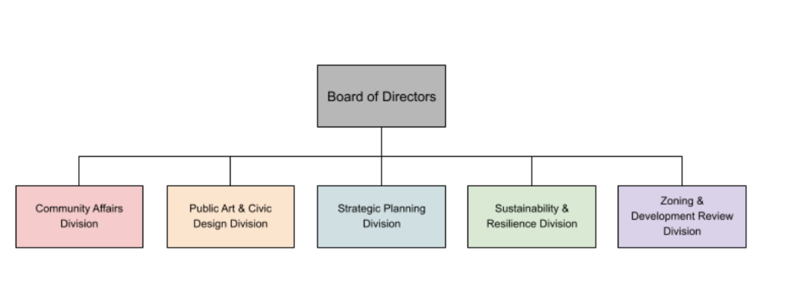

← go back home
Creating a project-creation service to revitalize vacant lots
↓This website was a project as part of Interaction Design Studio 2 at Carnegie Mellon University. My team was composed of four Bachelors and Masters of Human-Computer Interaction students. DCP Connect is a project creation tool for city officials and project managers to collect and analyze public opinion about the city’s empty lots. The objective of this project was to design a service that utilizes a phone’s native capabilities.
There are currently over 3,000 vacant lots in the city of Pittsburgh, all of which are lots that could be revitalized to create public and private spaces to serve the needs of Pittsburgh residents. The Pittsburgh Department of City Planning leads urban planning initiatives. We noticed an area of opportunity to create a service that enables DCP project managers to quickly analyze over 300,000 community voices and determine what to build in Pittsburgh’s vacant lots.
Through initial research about how the DCP operates, we explored DCP’s role in overseeing and regulating the sale of more than 3,000 vacant parcels of tax-delinquent land in Pittsburgh. The DCP is organized in five divisions, each with varying goals from sustainability, zoning, strategic planning, public art, to community affairs. However, the overriding goal is to sustain and enhance a thriving city of neighborhoods for residents. As the first step to creating a value flow model, we created a single stakeholder chart detailing each entity’s preference, goal, needs, and key attributes.
I found it insightful, yet challenging, to design a service for a company with many internal and external stakeholders. When conducting domain research, I was initially overwhelmed with the DCP ecosystem. However, after completing a stakeholder map and a value flow model, I found it to be very effective at pushing me to prioritize and balance the most important needs of two specific stakeholders throughout the design process.
I was also surprised by the intricacies of designing a mobile service app that takes advantage of a phone’s native features. Now, I realize that beyond convenience, a mobile phone has features (gyroscope, accelerometer, VR, etc.) that can elevate a user’s experience.
Coded with ♥ by Jennifer Jia